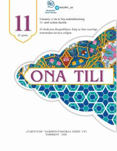

OT11-sinf ona tili fani bo‘yicha 2-qism darslik va amaliy mashg‘ulotlar to‘plami.
Ushbu darslik umumiy o‘rta ta’lim maktablarining 11-sinfi uchun mo‘ljallangan bo‘lib, ona tili fanidan talaffuz va imlo me'yorlari, nutq madaniyati va savodxonlikni oshirishga oid nazariy va amaliy mashg‘ulotlarni o‘z ichiga oladi. Kitobda o‘zlashma so‘zlar, tovush o‘zgarishlari hamda ularning imloda aks etish qoidalari atroflicha tushuntirilgan.